Yiğit Özen
Thirty-five works
Paintings
since 2019
Istanbul · Milan · Luxembourg
yigitozen.xyz
Imprint
Yiğit Özen
Thirty-five
paintings
2019–2026 · Istanbul, Milan and Luxembourg
Eight of thirty-five works made since 2019 across Istanbul, Milan and Luxembourg. The whole book, with every detail and the stages of the newest paintings, is at yigitozen.xyz/artbook.
Medium
Acrylic on canvas, on carton and on paper, and one drawing in charcoal
Order
Newest first, so the seven years are read backwards
Rights
All works © Yiğit Özen. All rights reserved
2
Imprint
Yiğit Özen
Istanbul · Milan · Luxembourg
Paintings
since
2019
Thirty-five works
Newest first
3
Paintings since 2019
On the work
The figures in these paintings are assembled rather than drawn whole. A body accumulates out of clusters of rounded cells and bubbles that lean against one another, and it may close or stay open: which way it goes belongs to where that figure stands in the scene and to what it is thinking there. Bodies and faces are the medium the work is made in, and the question they carry is an existential one. What lies behind them is not a backdrop but a place, and those places work as dimensions.
The decisions are taken in wet paint, on the spot. Layer goes over layer like a palimpsest, and they are not layers of light and shadow: they are colour clusters of movement, energy, aura and feeling. Large areas of ground are left bare, and they carry as much weight as the painted part.
Familiar compositional formats are kept while the agreement that made them legible is withdrawn: an object is held out, a sign is displayed, and what either stands for is never supplied. Titles act as a second body in the scene, bending the image instead of describing it. Power appears as a distribution of weight, one figure left underneath the stack. At the edges a small onlooker sits with its eyes closed and its mouth sewn shut, so the witness is cancelled before anything can be reported. Scale works as a verdict, one face given as a person and the rest reduced to signs, sometimes a face replaced by a number.
On the work
Text by the artist
4
On the work

15 · Viperella, the head and the raised hand
5
On the work
Biography
Yiğit Özen

Yiğit
Özen
Born 1994, Istanbul
Yiğit Özen was born in 1994 in Istanbul and trained as an architect.
The painting dates from 2018 onward. The thirty-five works in this book were made between 2019 and 2026, across Istanbul, Milan and Luxembourg.
From 2020 the studio work went largely to XR and spatial design, and the canvases thin out to one commission in 2023 before the painting resumes in 2026. The years are given as they fall rather than smoothed over.
Alongside the paintings, Özen works as an XR and spatial web designer, and is the founder of decentralize design in Milan and Virtually Ever After in Luxembourg.
Painter and spatial designer
Studio, Luxembourg
6
Biography
Exhibitions and talks
Selected
Painting, selected exhibitions
Power of the Nature, Fabbrica del Vapore, Milan
2019
The Arts Special Projects, Fabbrica del Vapore, Milan
2019
XR and spatial design, selected
Communitas III by Kollektiv Kollektiv, Kunsthaus Steffisburg
2021
New Freedom Think, Mads Gallery, Milan
2022
Art Design, Holy Art Gallery, London
2022
DYOR, Kunsthalle Zürich, Zurich
2022
Creators of the Metaverse by Metamundo, Art Basel Miami
2022
New Codes by VCA, Draup and Mad Global, Royal Institution, London
2023
Talks
VCA Mentorship, 6th Cohort, Architecture in the Metaverse
2023
Opening Keynote, Digital Fashion Summit, Creative Denmark
2024
The painting and the design practice are listed apart
7
Biography
Contents
Thirty-five works
01
7 fam board game
2026
10
02
Virgil on Virtual Cage (final_final-finalV9)
2026
14
03
gary grills cooper
2026
18
04
walls of perception
2026
0
05
articulo attack on mandarin
2026
22
06
s(t)lop
2026
0
07
penguin is not a friend, only a sinner
2023
0
08
ciao capo, sono squalo
2020
26
09
cellular spleens
2020
0
10
cute but unemployed cartoon figure
2020
0
11
the family dinner after a night in jaïl
2020
0
12
caprocorn sister: war, plague, earthquake
2020
0
13
baby rights 101
2020
0
14
When the Darkness surrounds, be among those who burn the Great Fire
2020
0
15
viperella
2020
30
16
bacchus 2
2020
0
17
The On-Top Ruler
2020
0
18
sin over black matter
2019
0
Each work opens on a spread: the note, then the painting
8
Contents
Contents
Thirty-five works
19
the assassination of the crow
2019
0
20
despite transgression
2019
0
21
duality of the angelic summarization
2019
0
22
victim psycho-logique II : the peachy pharaoh connects with the chair
2019
34
23
guarding holy mountains from malice
2019
0
24
good people helping bad ones (that’s why they’re bad too)
2019
0
25
amor cathedra
2019
0
26
burningman fast
2019
0
27
il sbagliato di rompipalle
2019
0
28
morbid forebodings triggered by childish landscape
2019
0
29
wings of abyss
2019
0
30
see u in the other side
2019
0
31
society screwing balance
2019
0
32
How to materialize your loneliness by using an animal in somewhere concrete or technologic
2019
0
33
Century of 0 & 1 / Transhumanism
2019
0
34
remixed execution of lucid drowning
2019
0
35
two woman figures sitting at the back of the canvas
2019
36
Each work opens on a spread: the note, then the painting
9
Contents
01 · Acrylic on canvas
2026 · Luxembourg
7 fam board game
100 × 80 cm · 39 ⅜ × 31 ½ in
One side stands wrapped, each cone clear of the next; the other is stacked two and three high until one head cannot be told from another. Those are the two ways of being a family available on this board, and the game is between them. Nothing has been taken off, so whatever is being played is not the kind of game that ends with a winner. The larger of the two heads has neither eyes nor a mouth; the small one opposite it is all glare.
Colour
Warm and cool level at about a third each, cyan the largest family, green under two in a thousand
Composition
A board turned corner on, its near point the one corner shown whole, two heads at opposite scales
Hand
Lobes turned wet into wet for the heads, the wrappings and the faces drawn last with a thin tip
10
2026 · Luxembourg

11
2026 · Luxembourg
01 · 7 fam board game
Detail
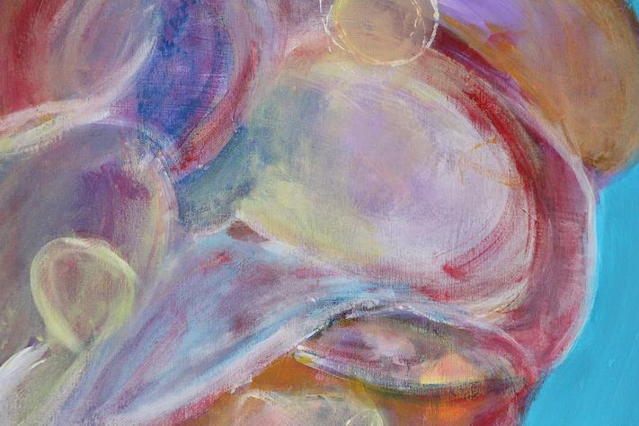
The left player's head
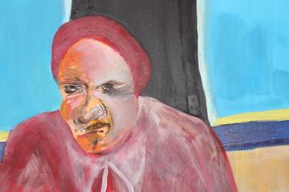
The right player's head
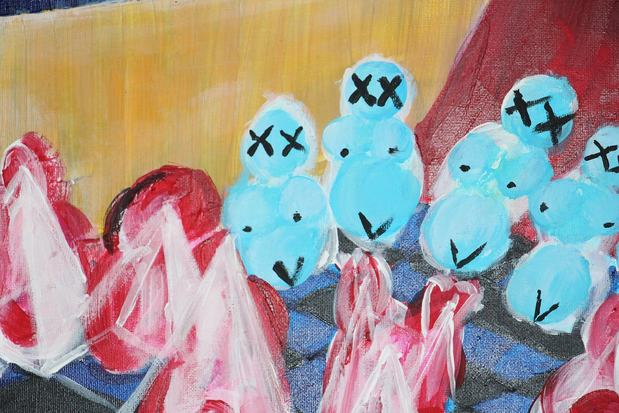
The blue side, ranged on the board
12
2026 · Luxembourg
01 · 7 fam board game
Detail
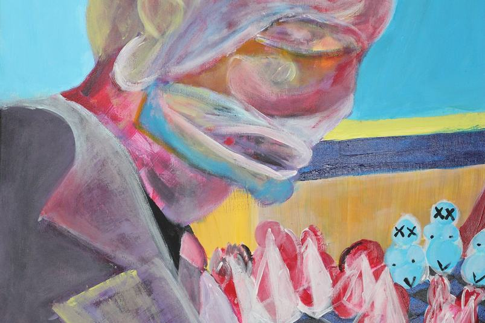
The left player above the near cones
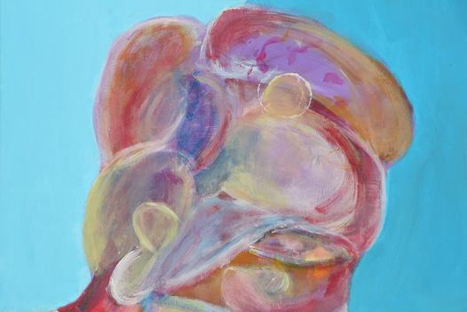
The left player's head, closer
13
2026 · Luxembourg
02 · Acrylic on canvas
2026 · Luxembourg
Virgil on Virtual Cage (final_final-finalV9)
80 × 100 cm · 31 ½ × 39 ⅜ in
The cage is drawn, not built. A few white lines lay a ceiling across the top and drop two uprights, then stop two fifths of the way down, so nothing is actually shut in. Underneath, the bodies are soft, pressed from the tube and scratched while still wet, and not one of them looks at the lines. The title carries a guide out of the underworld and a file name that has been saved as final nine times over: two promises of an ending, made by something that has none.
Colour
Three quarters warm, cool under four per cent, the white wig the lightest point
Composition
A white lined box that promises to enclose and stops at two fifths of the height
Hand
Grainy pink pressed from the tube and scratched while wet, against flat opaque line
14
2026 · Luxembourg

15
2026 · Luxembourg
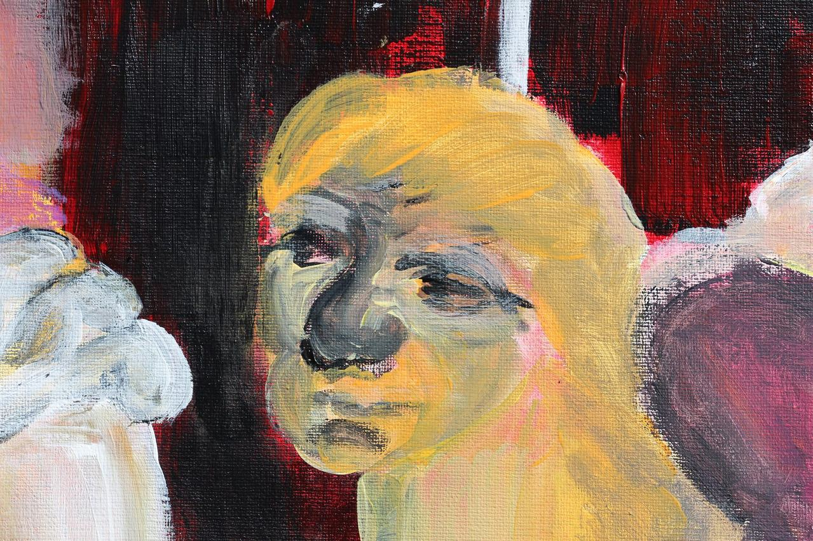
02 · The blonde head at the right
Detail
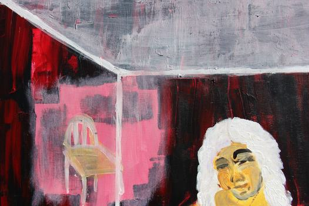
The white box drawn over the top
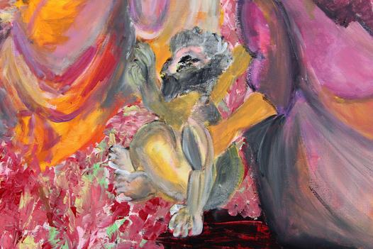
The reclining body in the coral bed
16
2026 · Luxembourg
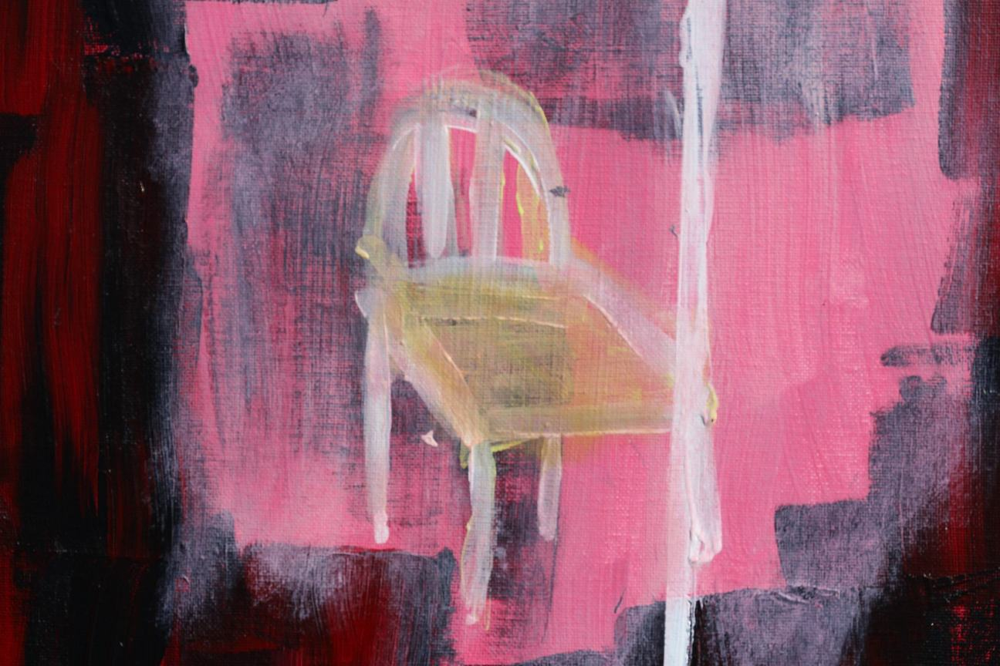
02 · The chair drawn on the pink panel
Detail
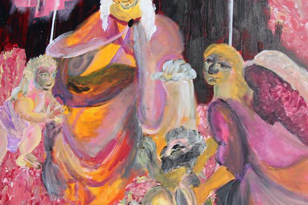
The right side, and the wing behind the shoulder
17
2026 · Luxembourg
03 · Acrylic on canvas
2026 · Luxembourg
gary grills cooper
55 × 75 cm · 21 ⅝ × 29 ½ in
“Whatever happened to Gary Cooper? The strong, silent type. That was an American. He wasn’t in touch with his feelings. He just did what he had to do.”
The quotation mourns a man who did not have to know what he felt. The painting gives him back as a stack of coloured balls with a cigar in it, the one straight line in the picture falling from his mouth, and sets a pan of coals at his feet. Grilling is the only thing he is doing, and the title has already broken his name in half to fit the joke.
Colour
Nine tenths warm, two turquoise scratches at waist height the only cool
Composition
A frontal order broken by one straight rod falling left from the mouth
Hand
Semi transparent touches laid upward in the pan, a near empty brush across the turquoise
18
2026 · Luxembourg

19
2026 · Luxembourg
03 · gary grills cooper
Detail
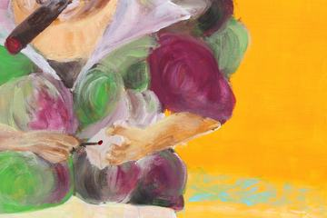
The shoulder, built from lobes

The lobes of the chest

The hands, and the rod between them
20
2026 · Luxembourg
03 · gary grills cooper
Detail
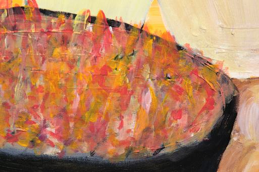
The pan at the lower left
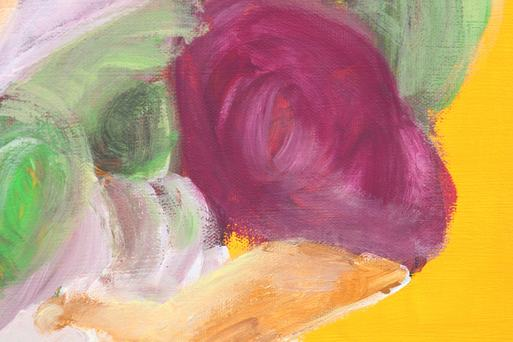
The forearm crossing the waist
21
2026 · Luxembourg
05 · Acrylic on canvas
2026 · Luxembourg
articulo attack on mandarin
80 × 80 cm · 31 ½ × 31 ½ in
The flock is already committed, every wing swept the same way down the diagonal, and the row of figures standing along the boat does not look up. Each of them has an X where the eyes should be, so there is nobody aboard to see it coming. The anchor lies in the corner with its chain beside it. One thin figure at the centre holds the pole, which is the only act in the painting, and it cannot be told whether it is steering or holding on.
Colour
Blue, grey, white and black only, contrast carried by value and not by hue
Composition
A flock on the main diagonal, upper right to lower left, over a row of figures a third up
Hand
A loaded brush flung sideways, bristles splitting, no wing entered twice
22
2026 · Luxembourg

23
2026 · Luxembourg
05 · articulo attack on mandarin
Detail
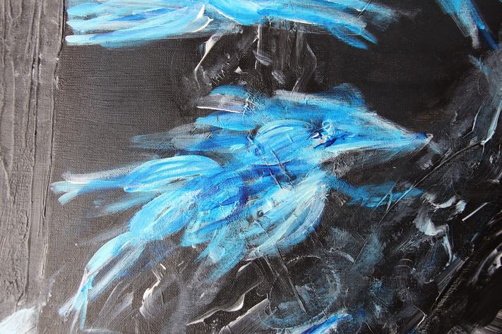
The flock, upper middle

The figure at the pole
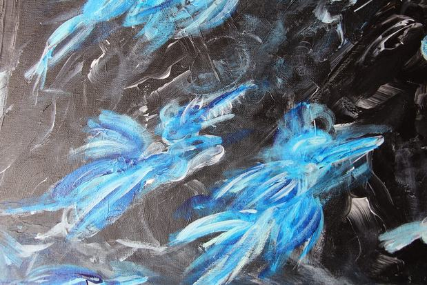
Two birds, mid flight
24
2026 · Luxembourg
05 · articulo attack on mandarin
Detail
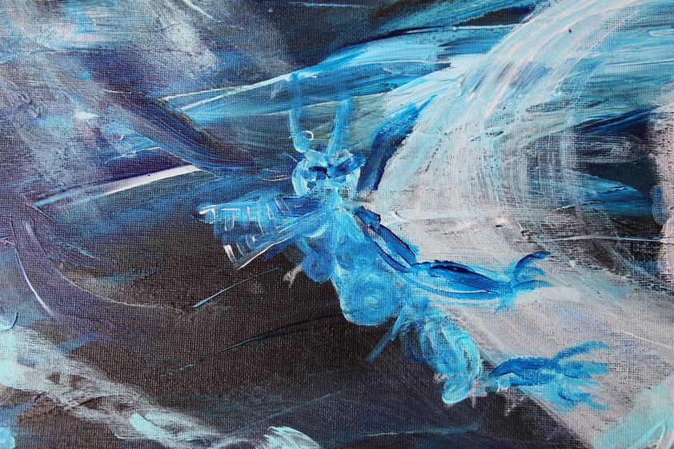
A bird low at the left
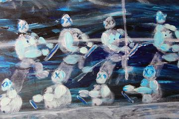
The row of figures on the boat
25
2026 · Luxembourg
08 · Acrylic on canvas
2020 · Milan
ciao capo, sono squalo
65 × 90 cm · 25 ⅝ × 35 ⅜ in
The pointed teeth ranged in the open mouth of the figure on the left stand as the one sharp edge within the softness of the rest of the painting. The title gives this mouth a sentence: hello boss, I am the shark. An Italian and overly cheerful greeting, the opening line of someone introducing himself as a predator.
Colour
Five names only, and blue occurs in the bodies alone and carries the whole division
Composition
Two vertical masses sharing the frame, three feet at the left and two at the right
Hand
One turning pull per egg unit, never entered twice, over a near dry combed wall
26
2020 · Milan

27
2020 · Milan
08 · ciao capo, sono squalo
Detail
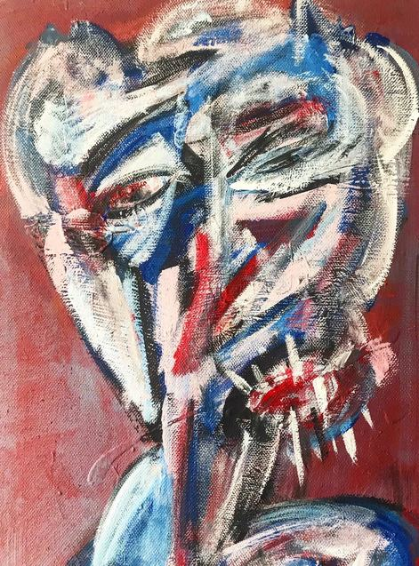
The left head, and its teeth
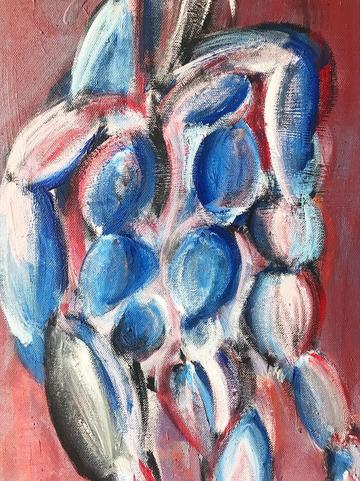
The body, egg over egg
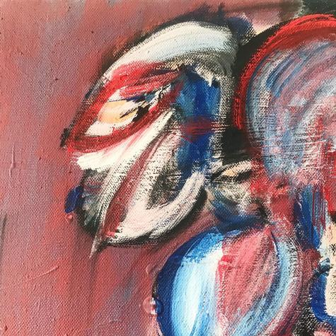
The right head, in profile
28
2020 · Milan
08 · ciao capo, sono squalo
Detail
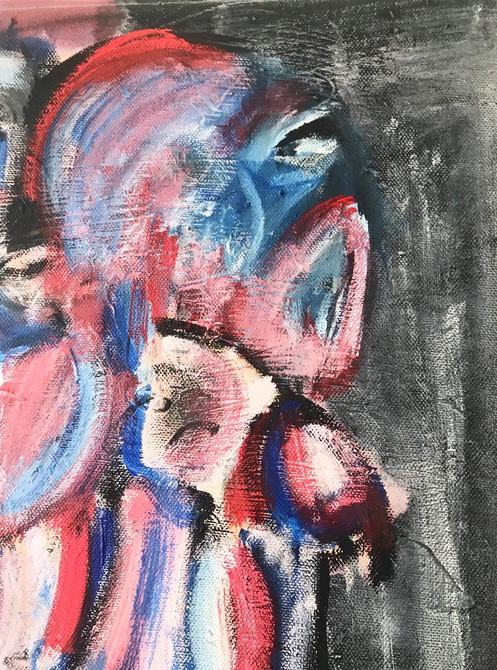
The right figure against the black
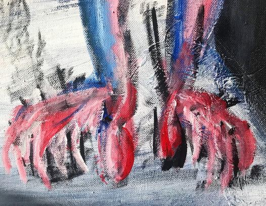
The feet on the white strip
29
2020 · Milan
15 · Acrylic on canvas
2020 · Milan
viperella
50 × 70 cm · 19 ⅝ × 27 ½ in
A dark band closes in from all four sides and leaves within it a light green rectangle between lemon and pistachio, setting up a second frame inside the painting. The figure is placed right in the middle of that bright field, standing in profile.
Colour
A light inner field against a dark outer belt, the body itself in no colour family
Composition
A second frame painted inside the picture with the figure at its middle
Hand
Thin horizontal ground letting the weave show, loaded curves for the masses, dark strokes last
30
2020 · Milan

31
2020 · Milan
15 · viperella
Detail
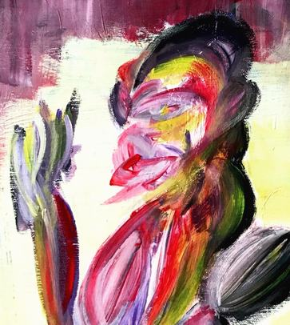
The head, and the raised hand
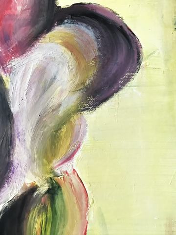
The hip, turning
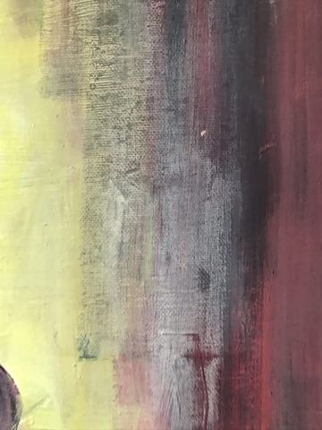
Where the light field meets the belt
32
2020 · Milan
15 · viperella
Detail
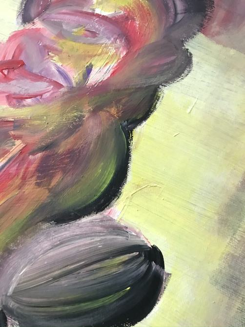
The chest, and the grey lobe
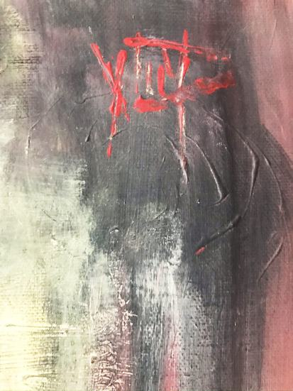
The red mark in the top right corner
33
2020 · Milan
22 · Acrylic on canvas
2019 · Milan
victim psycho-logique II : the peachy pharaoh connects with the chair
65 × 90 cm · 25 ⅝ × 35 ⅜ in
A peach-coloured body stands doubled over on a diagonal running from lower left to upper right, its heaviest mass gathered right at the level of the belly, the legs that bear it thin and long; the borne is heavy, the bearer weak.
Colour
Half a single blue purple against the peach yellow body, opposite ends of the wheel
Composition
Three units left to right, a hanging toy, a body collapsed on a chair, an empty chair in line
Hand
Flat ground in one coat, the body rubbed soft inside a thick black contour, one chair unpainted
34
2019 · Milan

35
2019 · Milan
35 · Charcoal on the reverse of canvas
2019 · Milan
two woman figures sitting at the back of the canvas
65 × 90 cm · 25 ⅝ × 35 ⅜ in
The stretcher bars and the central rail are visible just as they are; two female figures are drawn in charcoal on the unpainted back face of the canvas, that is the side normally left turned to the wall.
Colour
No paint at all, the range running between charcoal black and raw cloth white
Composition
The stretcher crossbar dividing the back into two equal panels, one figure in each
Hand
Charcoal on unprimed cloth, holding to the crests of the weave with no binder
36
2019 · Milan

37
2019 · Milan
A recurring figure
2019–2026
The onlooker
Cogs, and they believe in the work
A small figure turns up in eight of these paintings, built from stacked circles, an X drawn over each eye and in one of them a mouth stitched shut. It is never the subject. It stands at the foot of the heap, in a row along a boat, hung upside down in a corner, ranged across a board.
They are the functionaries. Emptied of anything of their own, put there to serve a purpose, and, as far as anything in the painting shows, convinced they are doing some good. The X is not violence done to them; it is the condition of the job. Present at the scene, and unable to report it.
8 works
01 · 05 · 20 · 22 · 23 · 24 · 29 · 31
38
The onlooker
The onlooker, in every painting it appears in
Details

01 · 2026 · Blue, stacked two and three high, ranged across the board

05 · 2026 · A row of them standing along the boat

20 · 2019 · White and tufted, crossed eyes and a stitched mouth

22 · 2019 · Ovoid clusters marked with an X, hung at the upper left

23 · 2019 · Three of them, arms linked, before the mountain

24 · 2019 · Three at the foot of the white heap, one floating clear of it

29 · 2019 · Hung upside down at the upper left, fingers spread

31 · 2019 · Red, drawn in a crowd, one of them raised above the rest
39
The onlooker
Colophon
Yiğit Özen
All works by Yiğit Özen, born 1994 in Istanbul and trained as an architect. Works are given newest first, so a paragraph that says a thing happens for the first time means the first time reading backwards through the book.
Dimensions are width by height, in centimetres.
Photography by the artist. Plates and details reproduce documentation of the paintings; colour and surface differ from the works themselves.
Where a paragraph gives a proportion or a percentage, it was measured on the documentation file rather than on the painting, and it describes that file. No colour target was used in the photography, so the figures are a reading of the photograph and not a colorimetric claim about the paint.
The epigraph on 03 is Tony Soprano, The Sopranos, HBO. The first frame of the process pages on 02 and 03 is a reference the painting was begun from and is credited on the page it appears.
A technical catalogue of the same works, with the full index, is published separately.
All works © Yiğit Özen. All rights reserved.
x@yigitozen.xyz
Instagram @yjgjf
yigitozen.xyz · de-centralize.com
40
Colophon